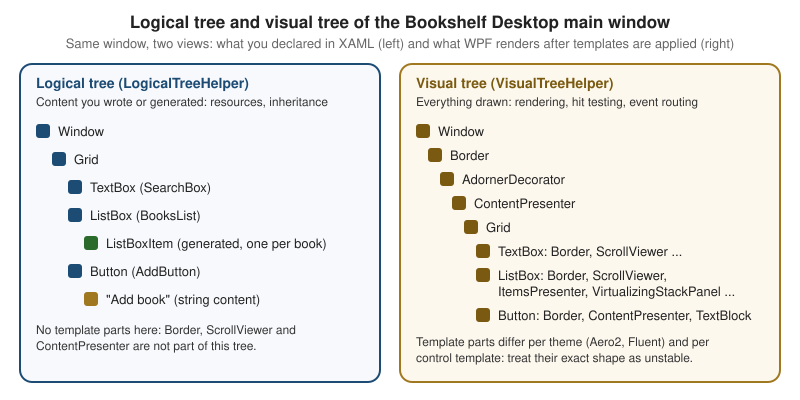

WPF Architecture & Application Model
|
This content was generated with the assistance of AI and should be verified against the official documentation before being relied on in production. |
Windows Presentation Foundation (WPF) is the retained-mode, vector-based UI framework for Windows desktop apps on
.NET. Almost everything else in this section (layout, data binding, styles, templates, commands) is built on a handful
of architectural decisions: a layered assembly stack, a single class hierarchy that adds one capability per level,
two trees that describe the same UI in different ways, and an Application object that owns the process lifetime. This
page explains those foundations. It was written against .NET 10 LTS (latest patch 10.0.13) with C# 14,
Visual Studio 2026 18.11.1, Windows App SDK 2.5.1 and CommunityToolkit.Mvvm 8.4.2 on Windows 10 and
Windows 11. .NET 11 is at release candidate 2 (11.0.0-rc.2) and general availability is expected at .NET Conf,
10 to 13 November 2026; the .NET 11 WPF release notes list bug fixes only at the time of writing, so nothing on this
page changes for it. WPF is the stack in focus; WinUI 3 and Windows Forms are compared in a table further down.
The running scenario is Bookshelf Desktop, with a BooksViewModel, a BookDetailsViewModel, an IBookRepository
and an IDialogService in the Bookshelf.Desktop namespace (models live in Bookshelf.Core). On this page the
scenario supplies the main window whose trees are inspected, the App class that starts and stops the app, the global
exception handling, and a single-instance guard so that opening the app twice brings the first window forward. The
XAML language is covered on XAML Language Fundamentals and the project layout on Project Structure & Build; windows,
dialogs and navigation, dependency properties, routed events, the Dispatcher and the Generic Host have their own later
pages, and are only introduced here.
The layers of WPF
WPF is a mix of managed code and a small unmanaged core. The conceptual overview on Microsoft Learn divides the managed part into three assemblies and names the unmanaged part the media integration layer (milcore):
| Layer | Managed or unmanaged | What it contributes |
|---|---|---|
|
managed |
The top layer that applications touch most: |
|
managed |
The WPF core types: |
|
managed |
The foundation types: |
milcore (media integration layer) |
unmanaged |
The rendering engine. It is written in native code for performance, talks to DirectX, and composes the retained scene that managed code describes. Managed code sends it rendering instructions; it draws. |
DirectX, |
unmanaged |
The platform WPF sits on. A WPF window is one top-level window handle (HWND) whose content WPF draws itself, rather than one HWND per control. |
Two further assemblies matter in practice: System.Xaml (the XAML reader and writer that all XAML dialects built on
.NET share, see the XAML Language Fundamentals page) and UIAutomationProvider / UIAutomationTypes (the
accessibility tree). Application code almost always references the whole bundle through the single
Microsoft.WindowsDesktop.App.WPF framework reference that UseWPF adds to the project.
Two consequences of the layering shape everyday WPF work:
-
Retained-mode rendering. An app does not repaint on
WM_PAINT. Elements describe what they look like (a drawing, a geometry, text), WPF retains that description, and the composition engine redraws from it. Invalidating and re-laying out the UI means changing the retained description, not painting. This is whyOnRendertakes aDrawingContextthat records instructions instead of a graphics device. -
Two threads, one affinity rule. The Learn threading-model page describes a UI thread (which owns the elements and runs the
Dispatcher) and a separate render thread that composes in the background. EveryDispatcherObjectbelongs to the thread that created it, and touching it from another thread throws anInvalidOperationException. The Threading, the Dispatcher & Async page covers this in depth.
Source: WPF architecture
What changed from .NET Framework to .NET 8, 9 and 10
The architecture is the same as on .NET Framework 4.x: the same layers, the same class hierarchy, the same trees and
the same Application model. What changed is how the stack is built, shipped and extended:
| Topic | .NET Framework 4.x | .NET 8, 9 and 10 (11 noted) |
|---|---|---|
Where WPF lives |
Part of the machine-wide .NET Framework, serviced with Windows. |
The |
Source and servicing |
Closed source. |
Open source at https://github.com/dotnet/wpf (managed code, plus the native graphics DLLs shipped with the shared framework). Updates arrive with .NET patch releases. |
Native renderer |
|
A separately shipped native core: the native graphics library ships as |
New features |
Frozen. |
Active but modest. .NET 9 added the Fluent theme (experimental). .NET 10 added more Fluent coverage and fixes. .NET 11 (RC2) lists bug fixes only. See the Themes & Fluent Design page. |
Project format |
Old-style |
SDK-style projects, |
Removed or unavailable |
AppDomains per feature, Remoting, Code Access Security, WCF server types. |
Not available on modern .NET; the Migrating from .NET Framework page lists them. |
Trimming and Native AOT |
Not applicable. |
Not supported for WPF (the SDK reports NETSDK1168 if you try). |
The element class hierarchy
WPF gives every on-screen thing a place in a single inheritance chain. Each level adds exactly one capability, which is why the chain is the best map of what a given object can do.
The diagram shows the namespace System.Windows and its children. Reading it from the top:
| Class | Assembly | What it adds |
|---|---|---|
|
|
Thread affinity. Every instance remembers the |
|
|
The WPF property system. |
|
|
The ability to be drawn: a place in the visual tree, a coordinate space, hit testing and the connection to the composition engine. |
|
|
Layout ( |
|
|
The framework-level layer: |
|
|
The templatable controls: the |
Three branches deserve a mention:
-
Freezablederives fromDependencyObjectbut not fromVisual. Brushes, pens, geometries and transforms are freezable; a frozen object is immutable, may be shared across threads and is cheaper to render. -
ContentElementandFrameworkContentElementare the non-visual counterparts ofUIElementandFrameworkElement. Flow-document inlines such asRun,SpanandHyperlinkderive from them. They take part in the logical tree and in routed events, but they are notVisuals: a text run is drawn by its container. -
PanelandTextBlockderive directly fromFrameworkElement, not fromControl. They have noControlTemplate: aPanellays out itsChildrenand aTextBlockdraws text itself.
Choosing a base class
The hierarchy answers a practical question: from which class should a new type derive?
| You want to … | Derive from | Why |
|---|---|---|
Store data with binding and animation, but no UI |
|
Gets dependency properties without layout or rendering. Behaviours and helpers often derive from |
Draw something custom and lay it out, without templating |
|
Override |
Compose existing controls |
|
Pure XAML plus code-behind, no |
Build a restyleable control with a default look |
|
A |
Hold many children and arrange them |
|
Override the layout passes. See Layout & Panels. |
View model or model type |
none of the above |
A view model is a plain .NET object with |
Source: WPF architecture
Thread affinity in two lines
Because DispatcherObject is the root, almost every WPF type is single-thread-affine. The check below is the building
block that later pages expand into Dispatcher.InvokeAsync, async / await and IProgress<T>:
using System.Windows.Controls;
namespace Bookshelf.Desktop;
public static class StatusText
{
// Safe to call from any thread: marshals to the UI thread when needed.
public static void Show(TextBlock target, string message)
{
if (target.Dispatcher.CheckAccess())
{
target.Text = message;
}
else
{
_ = target.Dispatcher.InvokeAsync(() => target.Text = message);
}
}
}Source: Threading model
Logical tree and visual tree
A WPF UI exists as two trees at the same time. The Learn page Trees in WPF defines them: the logical tree
describes the elements as they are declared in XAML or created in code, and the visual tree is the expansion of
that tree into every Visual that is actually rendered, including everything created by control templates.

| Logical tree | Visual tree | |
|---|---|---|
What it contains |
The objects you declared plus generated item containers. Content such as a |
Every |
Helper class |
|
|
What walks it |
Dependency property value inheritance ( |
Rendering, hit testing, and the route taken by routed events (the tunnelling and bubbling routes follow the visual tree). |
When it exists |
As soon as the element is created and parented. |
After the template is applied, typically at the first measure or at |
Stability |
Stable: it mirrors your markup. |
Unstable: it changes with the theme (Aero2 versus Fluent) and with any retemplating. Never hard-code a path of |
The two trees explain several behaviors that otherwise look random:
-
A resource declared on a
ContextMenuorPopupowner is found because the lookup follows the logical tree; a popup’s visual tree is a separate rooted tree. -
BindingwithElementNamefinds a name only in the same namescope, which is why names inside aDataTemplateare invisible from the window (the Markup Extensions & Namescopes page explains namescopes). -
Loadedcan fire on a parent before the templated children of a control exist. Code that needs a template part overridesOnApplyTemplatein a custom control or listens toLoadedand walks the visual tree afterwards. -
VisualTreeHelper.GetParentworks only forVisualandVisual3D; for aRunor another content element useLogicalTreeHelper.GetParent(the visual helper throws for other types).
Walking the trees
The helpers below dump both trees of the Bookshelf Desktop main window and find an ancestor by type. They are diagnostic tools: production code should bind and template rather than reach into the visual tree.
using System.Text;
using System.Windows;
using System.Windows.Media;
using System.Windows.Media.Media3D;
namespace Bookshelf.Desktop;
public static class TreeInspector
{
public static string DumpLogical(DependencyObject root)
{
var builder = new StringBuilder();
WriteLogical(root, 0, builder);
return builder.ToString();
}
private static void WriteLogical(object node, int depth, StringBuilder builder)
{
builder.Append(' ', depth * 2).AppendLine(Describe(node));
if (node is not DependencyObject element)
{
return; // strings and other plain content are leaves
}
foreach (var child in LogicalTreeHelper.GetChildren(element))
{
WriteLogical(child, depth + 1, builder);
}
}
public static string DumpVisual(DependencyObject root)
{
var builder = new StringBuilder();
WriteVisual(root, 0, builder);
return builder.ToString();
}
private static void WriteVisual(DependencyObject node, int depth, StringBuilder builder)
{
builder.Append(' ', depth * 2).AppendLine(Describe(node));
if (node is not (Visual or Visual3D))
{
return; // content elements are not visuals
}
var count = VisualTreeHelper.GetChildrenCount(node);
for (var index = 0; index < count; index++)
{
WriteVisual(VisualTreeHelper.GetChild(node, index), depth + 1, builder);
}
}
public static T? FindVisualAncestor<T>(DependencyObject start)
where T : DependencyObject
{
for (var current = VisualTreeHelper.GetParent(start);
current is not null;
current = VisualTreeHelper.GetParent(current))
{
if (current is T match)
{
return match;
}
}
return null;
}
private static string Describe(object node) =>
node is FrameworkElement { Name.Length: > 0 } named
? $"{node.GetType().Name} ({named.Name})"
: node.GetType().Name;
}Call it after the window has been laid out, for example from the Loaded event of the main window:
using System.Diagnostics;
using System.Windows;
namespace Bookshelf.Desktop;
public partial class MainWindow : Window
{
public MainWindow()
{
InitializeComponent();
Loaded += OnLoaded;
}
private void OnLoaded(object sender, RoutedEventArgs e)
{
Debug.WriteLine(TreeInspector.DumpLogical(this));
Debug.WriteLine(TreeInspector.DumpVisual(this));
}
}Source: Trees in WPF
Visual Studio shows the same two views without code: the Live Visual Tree window lists the visual tree of a running app and the Live Property Explorer shows where each property value comes from (see Development Environment & Tooling).
The Application class
Every WPF app has exactly one System.Windows.Application instance per process, reachable from any thread through the
static Application.Current. It is also a DispatcherObject, so its members belong to the UI thread. The Learn page
Application management overview lists its responsibilities:
-
Lifetime: the entry point,
Run, the startup and shutdown events andShutdown. -
Windows: the
Windowscollection of all open windows and theMainWindowproperty. -
Resources:
Application.Resources, the outermost level of resource lookup (see Resources & Resource Dictionaries). -
Command-line arguments:
StartupEventArgs.Argsin theStartupevent. -
Unhandled exceptions:
DispatcherUnhandledException. -
State bags:
Application.Properties, a dictionary of objects shared across the app. It is a legacy convenience; prefer dependency injection (see the Dependency Injection & the Generic Host page).
App.xaml and the generated entry point
App.xaml is compiled with the ApplicationDefinition build action. The build generates App.g.cs, a partial class
with a Main method marked [STAThread] that creates the App, calls InitializeComponent and then calls Run.
A WPF thread must be single-threaded apartment (STA) because OLE-based features such as the clipboard, drag and drop
and COM-based controls require it. You normally never write Main.
The lifecycle after Run is:
-
The
Appconstructor runs andInitializeComponentloadsApp.xaml(resources, event hookups). -
Runstarts the dispatcher message loop and raisesStartup(and callsOnStartup). -
If
StartupUriis set, WPF creates the window or page at that URI. Otherwise the code inStartupcreates the first window. -
The loop runs until shutdown is requested;
Exitis raised (andOnExitcalled) andRunreturns the exit code.
StartupUri versus the Startup event
| Way to open the first window | Use it when | Limits |
|---|---|---|
|
The first window needs no constructor arguments. This is the default of |
WPF creates the window itself through its parameterless constructor, so there is no place to pass in a view model or a service. Command-line arguments are not available to the window constructor. |
The |
You compose dependencies, read arguments, run a single-instance check, show a splash window, or decide at run time which window to show. |
You must create and |
A hand-written |
You need to run code before the |
The |
The Generic Host |
You want dependency injection, configuration and logging. |
You start the host in |
ShutdownMode
ShutdownMode decides when Run returns. It can be set in XAML (ShutdownMode="OnMainWindowClose") or in code before
the app runs; the value can also be changed while it runs.
| Value | The app shuts down when … | Typical use |
|---|---|---|
|
the last open window closes, or |
Document-style apps with peer windows. Careful with a hidden splash window: it keeps the app alive. |
|
the window in |
An app with one main window and several tool windows, like Bookshelf Desktop. |
|
|
Notification-area (tray) apps, background services with a UI that appears on demand, or an app that shows a logon window before the main window. |
MainWindow is set automatically to the first window created, which is a common source of surprises (a login window
becomes the main window). Application.Shutdown accepts an exit code, which becomes the process exit code unless
Exit overrides it through ExitEventArgs.ApplicationExitCode.
Startup, Exit and SessionEnding
| Event (and virtual method) | Event arguments | Purpose |
|---|---|---|
|
|
Compose the app and show the first window. Raised after |
|
|
Raised when the application gains or loses foreground status (any of its windows becomes the active window, or none is). Use them to pause polling or timers. |
|
|
Raised when the user logs off or shuts down Windows. Persist state here. Setting |
|
|
Raised when shutdown has begun and cannot be cancelled. Dispose resources, stop background work, release the single-instance mutex, flush logs. Keep it short: Windows may force-terminate a process that is slow to exit during logoff. |
<Application x:Class="Bookshelf.Desktop.App"
xmlns="http://schemas.microsoft.com/winfx/2006/xaml/presentation"
xmlns:x="http://schemas.microsoft.com/winfx/2006/xaml"
ShutdownMode="OnMainWindowClose"
Startup="App_Startup"
Exit="App_Exit"
SessionEnding="App_SessionEnding">
<Application.Resources>
<ResourceDictionary>
<ResourceDictionary.MergedDictionaries>
<ResourceDictionary Source="Themes/Light.xaml" />
</ResourceDictionary.MergedDictionaries>
</ResourceDictionary>
</Application.Resources>
</Application>Source: Application management overview
There is no StartupUri: the first window is created in code so a view model can be passed in.
using System.Windows;
using Bookshelf.Core;
using Bookshelf.Data;
using Bookshelf.Desktop.ViewModels;
using Microsoft.Extensions.DependencyInjection;
namespace Bookshelf.Desktop;
public partial class App : Application
{
private ServiceProvider? _services;
private MainWindow? _mainWindow;
private void App_Startup(object sender, StartupEventArgs e)
{
// Minimal manual wiring; a later page replaces it with the Generic Host.
_services = new ServiceCollection().AddBookshelfData().BuildServiceProvider();
var repository = _services.GetRequiredService<IBookRepository>();
IDialogService dialogs = new WpfDialogService(_services);
_mainWindow = new MainWindow { DataContext = new BooksViewModel(repository, dialogs) };
MainWindow = _mainWindow;
_mainWindow.Show();
}
private void App_SessionEnding(object sender, SessionEndingCancelEventArgs e)
{
// Logoff or Windows shutdown: keep this fast and do not block the user.
// Bookshelf writes every edit through IBookRepository as it happens, so nothing is pending;
// an app with unsaved work would flush it here, or set e.Cancel = true to ask first.
}
private void App_Exit(object sender, ExitEventArgs e)
{
// Final cleanup; the exit code can still be set here.
_services?.Dispose();
e.ApplicationExitCode = 0;
}
}Source: Application management overview
Microsoft Learn documents the Application members and the application lifetime, and the API reference for
ShutdownMode lists the three values. It does
not show a composition-root pattern for passing a view model into the first window; the code above is a user pattern.
Unhandled exceptions: the three hooks
A .NET application can fail on a UI thread, on a worker thread, or inside a task that nobody awaited. Each failure reaches a different event, and WPF code usually registers all three. Together they are the last line of defence: they exist to log and to shut down cleanly, not to hide bugs.
| Hook | Covers | Can the app continue? | Notes |
|---|---|---|---|
|
An exception thrown on the UI thread ( |
Yes, if the handler sets |
The event argument carries |
|
An exception on any thread that nothing handled, including worker threads and the finalizer thread. |
No. The event is a notification: |
Use it to write a crash log and flush it. You cannot mark the exception handled. It also fires for UI-thread exceptions that were not handled by the Dispatcher event. |
|
A faulted |
Yes. Call |
It runs on the finalizer thread, at a garbage collection that you do not control, long after the fault. Do not touch UI from it. It is useful as a diagnostic that some |
Which hook sees which failure:
| Where the exception is thrown | Dispatcher event | AppDomain event | Unobserved task event |
|---|---|---|---|
A button click handler (UI thread) |
yes |
only if unhandled |
no |
The continuation of an |
yes |
only if unhandled |
no |
A |
no |
no |
yes, at finalization |
A |
no |
yes, and the process ends |
no |
The |
no |
yes, and the process ends |
no |
The pattern below installs all three in the App constructor so that errors during startup are also covered. It is a
second partial-class file, so the lifecycle code above stays readable. IDialogService is the running-scenario dialog
abstraction; the file logger is a deliberately small stand-in for the logging framework configured on the Dependency Injection & the Generic Host page.
using System.IO;
using System.Windows;
using System.Windows.Threading;
namespace Bookshelf.Desktop;
public partial class App
{
private static readonly string LogPath = Path.Combine(
Environment.GetFolderPath(Environment.SpecialFolder.LocalApplicationData),
"Bookshelf",
"crash.log");
public App()
{
// Register in the constructor so that startup failures are logged too.
DispatcherUnhandledException += OnDispatcherUnhandledException;
AppDomain.CurrentDomain.UnhandledException += OnDomainUnhandledException;
TaskScheduler.UnobservedTaskException += OnUnobservedTaskException;
}
private void OnDispatcherUnhandledException(
object sender, DispatcherUnhandledExceptionEventArgs e)
{
Log("Dispatcher", e.Exception);
// Only keep running for faults you know leave state consistent.
if (e.Exception is OperationCanceledException)
{
e.Handled = true;
return;
}
// Tell the user, then let the exception end the app (Handled stays false).
MessageBox.Show(
"Bookshelf hit an unexpected error and must close. Details were saved to the log.",
"Bookshelf",
MessageBoxButton.OK,
MessageBoxImage.Error);
}
private static void OnDomainUnhandledException(
object sender, UnhandledExceptionEventArgs e)
{
// The process is going down (IsTerminating). Log synchronously and return quickly.
Log($"AppDomain (terminating: {e.IsTerminating})", e.ExceptionObject as Exception);
}
private static void OnUnobservedTaskException(
object? sender, UnobservedTaskExceptionEventArgs e)
{
// Runs on the finalizer thread at an arbitrary time: log only, never touch UI.
Log("Task", e.Exception);
e.SetObserved();
}
private static void Log(string source, Exception? exception)
{
try
{
Directory.CreateDirectory(Path.GetDirectoryName(LogPath)!);
File.AppendAllText(
LogPath,
$"{DateTimeOffset.Now:O} [{source}] {exception}{Environment.NewLine}");
}
catch (IOException)
{
// Logging must never throw from an unhandled-exception handler.
}
}
}For the other two hooks see AppDomain.UnhandledException and TaskScheduler.UnobservedTaskException.
The sample uses MessageBox for brevity inside the one place where IDialogService itself may be the failing
component; a normal feature reports errors through the dialog service and the view model.
Pitfalls
-
Handled = true is a decision, not a default. After an unknown exception the object graph can be half-updated. Continuing hides bugs and can corrupt data. Handle only the exceptions you understand, and exit for the rest.
-
Log the whole exception. An exception can resurface far from its origin through
Dispatcher.BeginInvokeor aTaskcontinuation. LogException.ToString(), not only the message, to keep the stack trace. -
Worker thread exceptions bypass the Dispatcher event. Wrap
Threadbodies andTask.Rundelegates intry/catch, or await the task on the UI thread so the exception returns to the UI context. -
Fire-and-forget tasks surface late. An
UnobservedTaskExceptionlog line means a task was dropped withoutawait; fix the call site instead of only handling the event. -
The handlers run on the thread that failed (the Dispatcher event on the UI thread, the others on whatever thread faulted). Never show UI from the
AppDomainor task event. -
Crash dialogs and re-entrancy. If the error dialog itself throws, the Dispatcher event can fire again. Keep the handler small and guard it with a flag if it does anything non-trivial.
Microsoft Learn documents the individual events but has no single page that explains WPF exception handling as a strategy. The table and rules above combine the API reference pages for these events with common practice.
Single-instance applications
WPF has no switch that restricts an app to one process: opening the app twice starts two processes. The usual goals
are to block the second instance, and to hand its command-line arguments (for example "open this file") to the first.
Microsoft Learn does not document a single-instance recipe for WPF on modern .NET. The patterns below are user
patterns built from documented primitives (Mutex and named pipes), and they are the ones most used in practice.
| Pattern | How it works | Strengths | Weaknesses |
|---|---|---|---|
Named |
The first process creates a named mutex and owns it. A second process finds that it already exists and exits. |
Smallest code. Works across user sessions with a |
The second instance cannot pass arguments, nor activate the first window. |
Named |
The mutex decides who is first. The first instance listens on a named pipe; the second sends its arguments to the pipe, then exits. |
Bring the first window forward and open the file the user double-clicked. |
More code; the pipe needs access control and input validation. |
Process search ( |
Compare the process list with the current process. |
No named object. |
Race conditions when two copies start together; renamed executables defeat it. Avoid it. |
|
The Visual Basic runtime’s single-instance feature ( |
Built in. |
Needs an assembly reference to Visual Basic support, and a hand-written |
Windows App SDK |
|
Official API. |
WinUI 3 and packaged apps; not part of WPF. |
Mutex plus named pipe
The guard below owns the mutex for the lifetime of the first instance and exposes a pipe listener for later
instances. The Local prefix scopes the mutex to the current logon session, so two users on the same machine can
each run their own copy. PipeOptions.CurrentUserOnly restricts the pipe to the same user account. The mutex name and
pipe name are placeholders: choose names that include your product and publisher, because any process can try to open a
well-known name.
using System.IO;
using System.IO.Pipes;
namespace Bookshelf.Desktop;
public sealed class SingleInstanceGuard : IDisposable
{
private const string MutexName = @"Local\Bookshelf.Desktop.SingleInstance";
private const string PipeName = "Bookshelf.Desktop.SingleInstance.Pipe";
private readonly Mutex _mutex;
private readonly CancellationTokenSource _cancellation = new();
private SingleInstanceGuard(Mutex mutex) => _mutex = mutex;
// Returns null when another instance already owns the mutex.
public static SingleInstanceGuard? TryAcquire()
{
var mutex = new Mutex(initiallyOwned: true, MutexName, out var createdNew);
if (createdNew)
{
return new SingleInstanceGuard(mutex);
}
mutex.Dispose();
return null;
}
// Synchronous on purpose: called from App startup before any window exists,
// where blocking on an async method could deadlock the dispatcher.
public static bool SignalFirstInstance(string[] arguments)
{
try
{
using var client = new NamedPipeClientStream(
".", PipeName, PipeDirection.Out, PipeOptions.CurrentUserOnly);
client.Connect(2000);
using var writer = new StreamWriter(client);
writer.Write(string.Join('\n', arguments));
writer.Flush();
return true;
}
catch (TimeoutException)
{
return false;
}
catch (IOException)
{
return false;
}
}
// Start from the UI thread so the callback runs on the UI synchronization context.
public async Task ListenAsync(Action<string[]> onActivated)
{
var token = _cancellation.Token;
while (!token.IsCancellationRequested)
{
try
{
await using var server = new NamedPipeServerStream(
PipeName,
PipeDirection.In,
maxNumberOfServerInstances: 1,
PipeTransmissionMode.Byte,
PipeOptions.Asynchronous | PipeOptions.CurrentUserOnly);
await server.WaitForConnectionAsync(token);
using var reader = new StreamReader(server);
var message = await reader.ReadToEndAsync(token);
onActivated(message.Split('\n', StringSplitOptions.RemoveEmptyEntries));
}
catch (OperationCanceledException)
{
break;
}
catch (IOException)
{
// The client disconnected early; wait for the next one.
}
}
}
public void Dispose()
{
_cancellation.Cancel();
_mutex.ReleaseMutex(); // must run on the thread that owns the mutex: the UI thread
_mutex.Dispose();
_cancellation.Dispose();
}
}The app wires the guard into startup. The first instance keeps the guard in a field (a mutex that is garbage collected
is released and a second instance would then start), listens for later instances, and disposes the guard in Exit.
The second instance forwards its arguments and shuts down without creating any window.
using System.Windows;
using Bookshelf.Core;
using Bookshelf.Data;
using Bookshelf.Desktop.ViewModels;
using Microsoft.Extensions.DependencyInjection;
namespace Bookshelf.Desktop;
public partial class App : Application
{
private SingleInstanceGuard? _guard;
private ServiceProvider? _services;
private MainWindow? _mainWindow;
private void App_Startup(object sender, StartupEventArgs e)
{
_guard = SingleInstanceGuard.TryAcquire();
if (_guard is null)
{
SingleInstanceGuard.SignalFirstInstance(e.Args);
Shutdown(0);
return;
}
_services = new ServiceCollection().AddBookshelfData().BuildServiceProvider();
var repository = _services.GetRequiredService<IBookRepository>();
_mainWindow = new MainWindow
{
DataContext = new BooksViewModel(repository, new WpfDialogService(_services))
};
MainWindow = _mainWindow;
_mainWindow.Show();
// Fire and forget on purpose: the loop ends when the guard is disposed.
_ = _guard.ListenAsync(BringToFront);
}
private void BringToFront(string[] arguments)
{
if (_mainWindow is null)
{
return;
}
if (_mainWindow.WindowState == WindowState.Minimized)
{
_mainWindow.WindowState = WindowState.Normal;
}
_mainWindow.Activate();
// Treat arguments as untrusted input: validate before opening anything.
}
private void App_Exit(object sender, ExitEventArgs e)
{
_guard?.Dispose();
_services?.Dispose();
}
}The mutex part derives from the Mutex API reference. Neither page is a WPF single-instance guide; the combination is a pattern, not an official recipe.
Single-instance pitfalls
-
Keep the mutex referenced. A local
using varthat goes out of scope, or aGC-collected field, releases the name and lets a second instance start. -
LocalversusGlobalprefix.Localisolates logon sessions (including remote desktop and fast user switching).Globalblocks a second copy in any session and normally needs permissions for the first creator. -
Release on the owning thread.
ReleaseMutexthrows if called from a different thread than the one that owns the mutex. Create and dispose the guard on the UI thread, as the example does. Abandoned mutexes (a crashed first instance) are released by Windows when the process ends. -
Foreground rules.
Window.Activatemay only flash the taskbar button when the calling process does not own the foreground. Windows restricts which process may take focus; the second instance is the one that has the user’s last input, so it is the better place to grant it (AllowSetForegroundWindowthrough P/Invoke is the documented route, see the Interop: Win32, WinForms & Web Content page). -
Do not trust pipe input. A named pipe is reachable by other processes.
CurrentUserOnlylimits it to the same account; still validate paths and commands from arguments exactly as for command-line input. -
Unpackaged versus packaged. Packaged (MSIX) apps can declare a single-instance behavior through the Windows App SDK instancing API; the mutex pattern works in both.
-
Installers. An installer or updater that needs to know whether the app is running can open the same named mutex to detect a running copy.
WPF versus WinUI 3 versus WinForms
| Concern | WPF | WinUI 3 (Windows App SDK) | Windows Forms |
|---|---|---|---|
Entry type |
|
|
|
Root of the element hierarchy |
|
|
|
Threading primitive |
|
|
|
Rendering model |
Retained, vector, composed through the native milcore engine; one HWND per window. |
Retained composition through the Microsoft.UI.Composition layer; one HWND per window. |
Immediate GDI / GDI+ painting per control, each a window handle. |
Shutdown control |
|
Closing the last window ends the process; |
|
Unhandled UI exceptions |
|
|
|
Single instance |
User pattern (mutex, pipe). |
|
User pattern, or |
Logical and visual trees |
Both, with |
A single XAML visual tree, walked with |
Parent / child |
The comparison is meant as orientation. The Windows App Platforms: WPF, WinUI 3, WinForms, MAUI & More page compares the stacks as products, and XAML Dialects: WPF, WinUI & MAUI compares their markup. The WinUI 3 and WinForms architecture pages come later in this section.
What Microsoft Learn does not provide
-
There is no modern-.NET rewrite of the WPF architecture or Trees in WPF pages: the text is the .NET Framework text, and it does not describe the native library layout of .NET (the milcore name survives in prose only).
-
There is no recommended single-instance approach for WPF anywhere in the official documentation. The
Mutexand named pipe sample is assembled from theMutexreference and the named pipe how-to. -
There is no single page on unhandled exception strategy for WPF. The three events are documented individually in the API reference.
-
The Learn pages explain what the visual tree contains but not the exact template parts per theme, and they say nothing about the stability of those parts across Aero2 and Fluent; treat the template structure as an implementation detail.
-
The WPF documentation has no composition-root guidance (how to pass dependencies into the first window); the Dependency Injection & the Generic Host page uses the Generic Host how-to and says so.
Pitfalls
| Pitfall | What to do |
|---|---|
Reading the visual tree before the template is applied. |
|
Walking the visual tree to find a control ( |
Bind, use named template parts with |
Touching an element from a worker thread. |
|
A hidden window keeping the app alive, or the wrong |
Choose the |
Creating |
Only one |
|
It hides dependencies and is not type-safe. Use constructor injection. |
Doing slow work in |
|
|
|
References
-
How to use named pipes for network interprocess communication
-
Delegates, Lambdas and Events for events
-
Async and Await for tasks and unobserved exceptions
-
Threads and Synchronization for mutexes